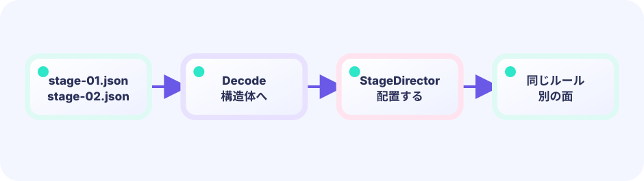

構造体にまとめる
名前・空・足場・ゴールを1面分のデータにします。
★★★☆☆ / PLAYABLE
同じ移動ルールへ、足場・背景色・ゴールの違う3つのステージデータを読み込みます。
はじめて読む人へ
ステージデータは床・敵・ゴールの位置をまとめた設計図。横スクロールアクションはそのデータの一部分をカメラで見せます。海老・天次郎は同じUpdateのまま別ステージを走れます。 PLAYABLEは『このページで実際に操作できる』という印です。
このページの1本
説明と次のコードを対応させてから、ゲームで変化を確かめよう。
stage := stages[stageIndex]
まず遊ぶ
同じ移動ルールへ、足場・背景色・ゴールの違う3つのステージデータを読み込みます。
DEEP DIVE
面を増やすたびにUpdateを書き直す必要はありません。足場の座標と背景、ゴールをstage構造体へまとめ、番号を変えて読み込みます。
名前・空・足場・ゴールを1面分のデータにします。
3面を[]stageへ入れ、stage番号で選びます。
重力と衝突はどの面でも同じ関数を使います。
SYSTEM LAB
面を増やすたびにUpdateを書き直す必要はありません。足場の座標と背景、ゴールをstage構造体へまとめ、番号を変えて読み込みます。
START
UPDATE と DRAW の境界
キー・タッチを読み、位置・HP・ゲージ・タイマー・盤面を変えます。判定やキュー操作もこちらです。
入力 → ルール → game を更新できあがった game の値を読んで、絵・文字・エフェクトを置きます。game の値は変えません。
game を読む → ピクセルへ投影このページのルールは Update 側（または Update が呼ぶ純粋な関数）へ置き、Draw はその結果を表示するだけにします。
ひとつのゲーム、自由な見せ方
Updateとgame構造体がゲームの事実を司ります。下の並んだ画面は、同じ自動プレイの位置・箱・ゴールを同時に見ています。違うのはDrawだけで、このデモ以外の見せ方にも自由に差し替えられます。
GO + EBITENGINE
遊べるゲームから中心部分だけを抜き出します。
type stage struct { sky color.RGBA; blocks []rect; goal rect }
current := stages[stageNumber]数値を1つ変えて、見え方や難しさを比べよう。
3面を[]stageへ入れ、stage番号で選びます。
重力と衝突はどの面でも同じ関数を使います。
FEEDBACK